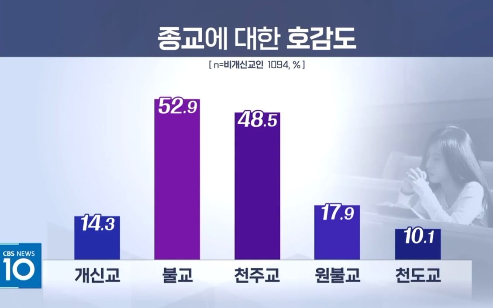
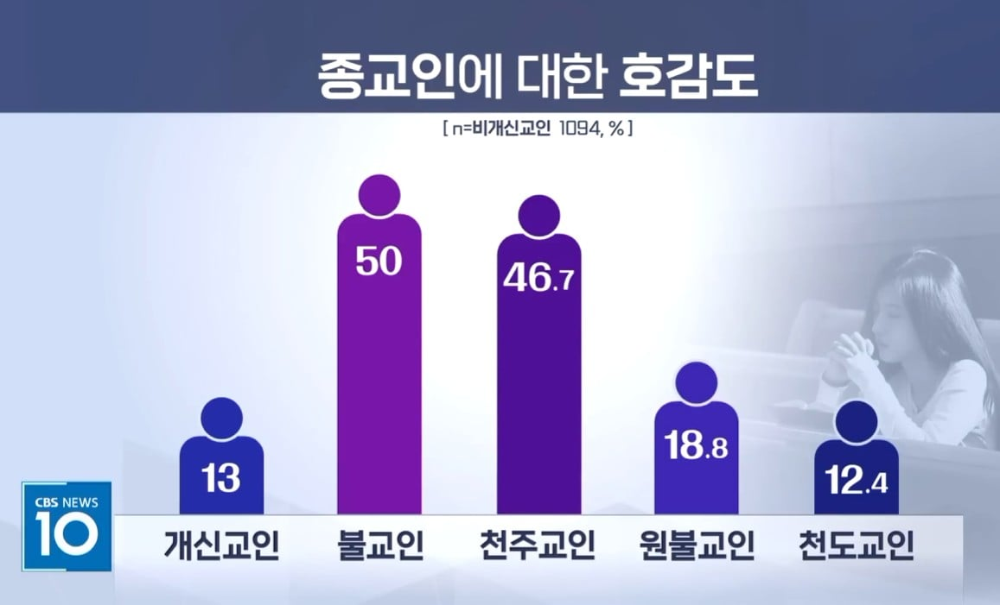
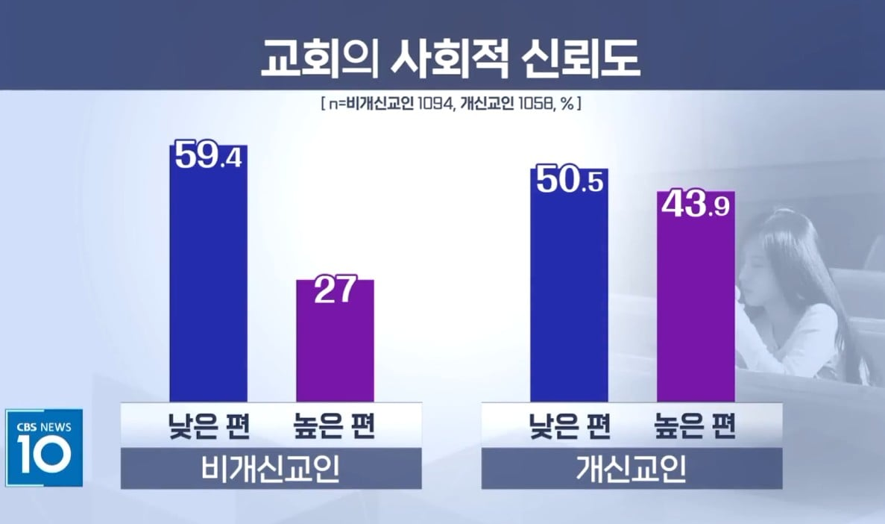
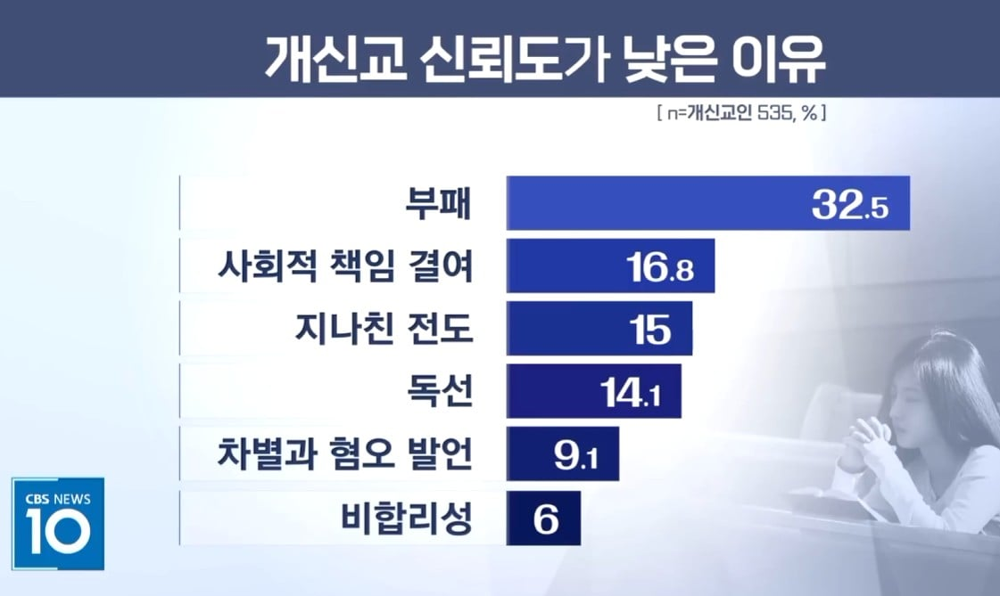
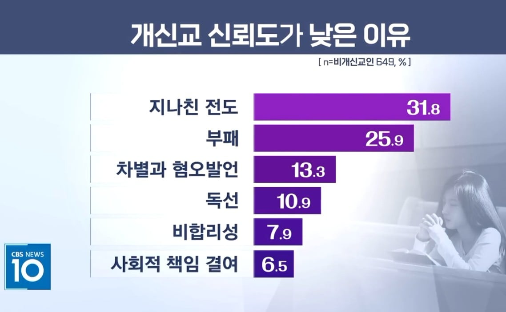
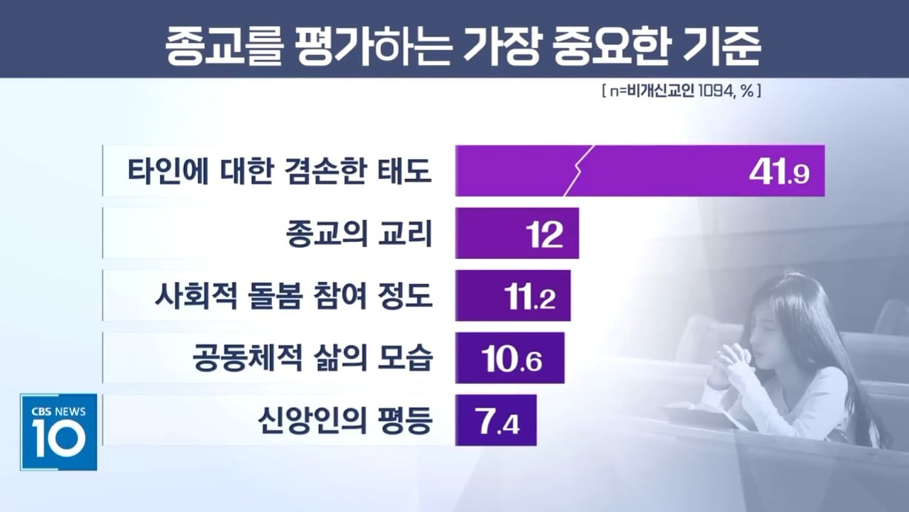
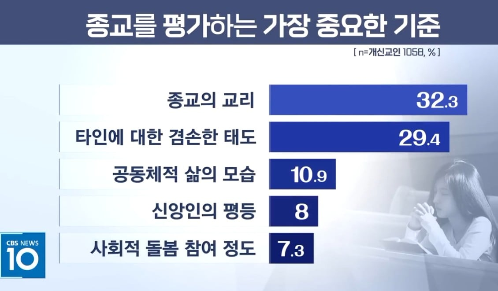

종교, 종교인 호감도에서 매우 낮은 순위

교회 신뢰도는 개신교인들도 낮다고 생각함


신뢰도 낮은 이유로는
개신교인 - 부패가 가장 높고
비개신교인 - 전도가 가장 높음


종교 평가 기준으론
비개신교인은 타인에 대한 겸손한 태도
개신교인은 종교의 교리


종교, 종교인 호감도에서 매우 낮은 순위

교회 신뢰도는 개신교인들도 낮다고 생각함


신뢰도 낮은 이유로는
개신교인 - 부패가 가장 높고
비개신교인 - 전도가 가장 높음


종교 평가 기준으론
비개신교인은 타인에 대한 겸손한 태도
개신교인은 종교의 교리
의외로 개신교인 사이에서도 부패를 원인으로 생각하는 사람이 많네
목사들 진짜 돈에 미친사람들 너무많아
개선이 될까? 이제 사양산업인데 잡은 양들 추수하면서 먹고 살아야지